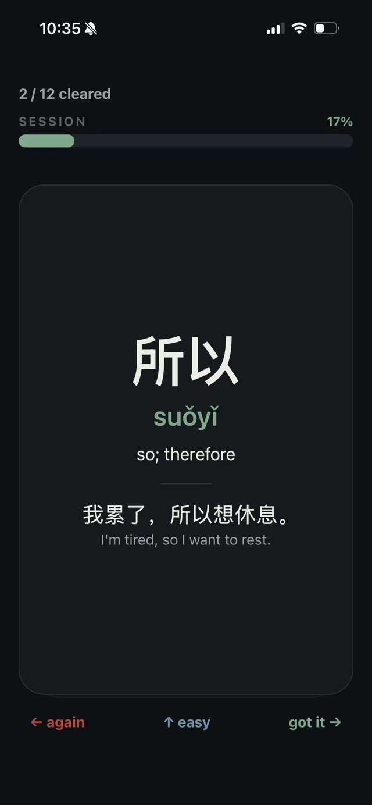
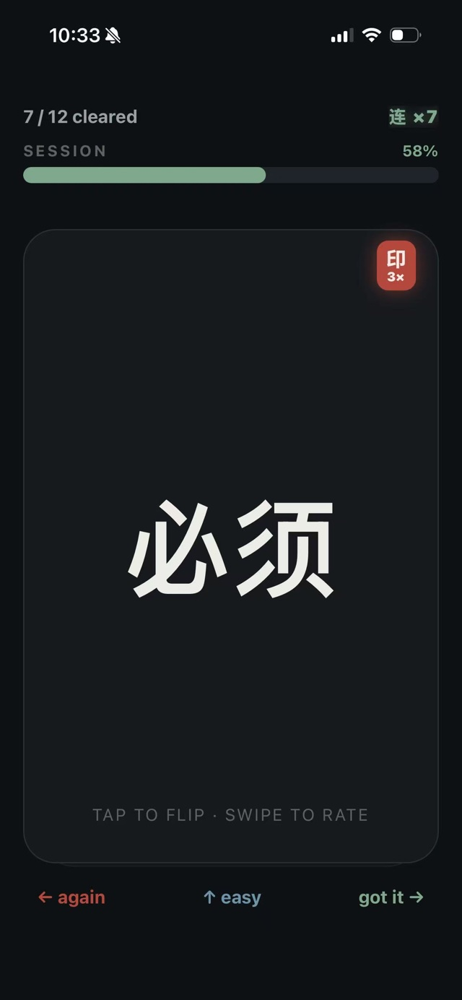
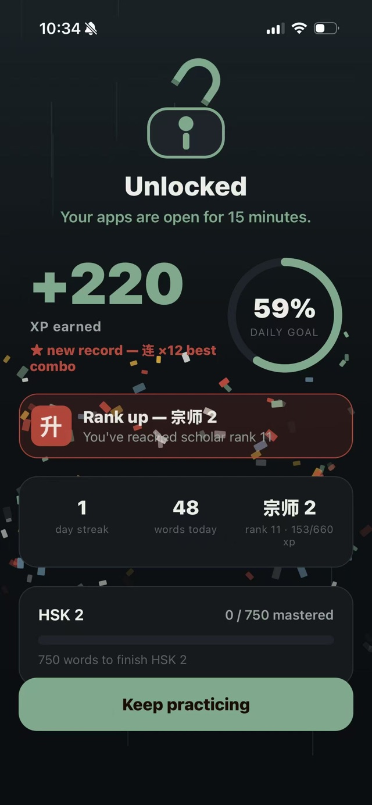
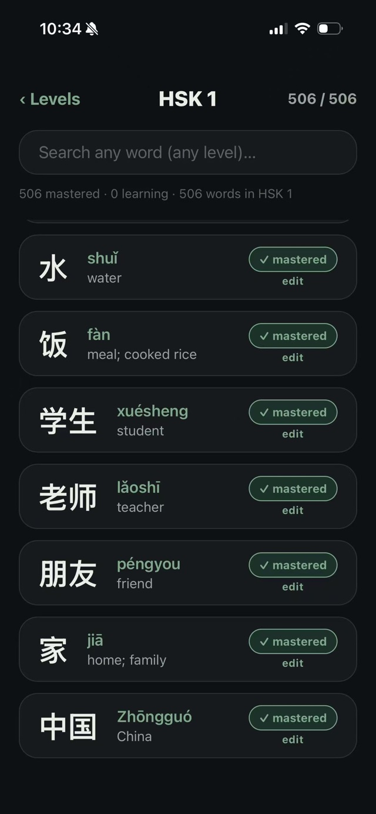
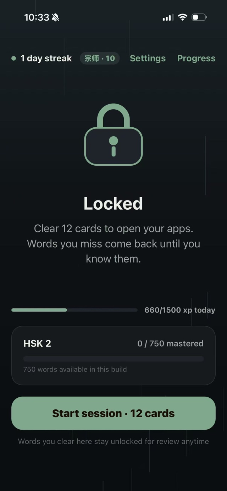

静 Study to unlock
Your phone stays locked until you've learned today's Chinese.
Still blocks your most distracting apps until you finish a two-minute Mandarin lesson. Reclaim your attention — and learn a language while you do it.

三步 How it works
Two minutes of Chinese stands between you and the scroll.
Choose what to block.
Pick the apps that eat your time — Instagram, TikTok, whatever pulls you in.
Do your daily words.
A quick HSK flashcard session: swipe, learn, build a streak.
Everything unlocks.
Finish and your phone is yours again — until tomorrow.
为何不同 Why it's different
Screen-time apps fail because they only take. Still gives back.
Two problems, one habit.
Cut your screen time and learn Mandarin with the same two minutes a day.
Flip the deal.
Your apps were engineered to keep you scrolling. Still makes them earn their way back — they don't open until you've done something for you.
Actually stick with it.
Streaks, XP, and ranks turn studying into a game. 10,969 words, HSK 1 through 7.
看一看 Inside the app
Calm on the surface. Stubborn underneath.




Reclaim your attention. Keep the Chinese.
One daily session. 10,969 words. Zero willpower required.